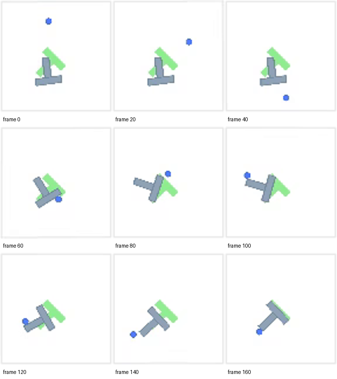

PushT 数据实验手册
数据事实
| 字段 | 形状/类型 | 解释 |
|---|---|---|
observation.state | float32 × 2 | agent 位置 |
action | float32 × 2 | 目标位置 / 像素坐标动作 |
observation.image | 视频帧，解码为 3×96×96 | 俯视相机图像 |
next.reward | float | 下一步奖励 |
next.done | bool | episode 是否结束 |
next.success | bool | 任务是否成功 |
episode_index | int | episode ID，切分必须按它 |
统计快照
规模
25,650 帧，206 episodes，10 fps。
长度
49 / 124.51 / 246，分别为 min / mean / max。
任务
Push the T-shaped block onto the T-shaped target.
图像
视频解码后为 3×96×96 float tensor。
实践命令
cd /mnt/models_2296/zmz/workspace/worldmodel_embodied_ai/04_lerobot_dataset
source .venv/bin/activate
python scripts/analyze_pusht.py输出：analysis/pusht_summary.json、轨迹图和 contact sheet。
三个不能犯的错
1. 随机按帧切分
相邻帧几乎重复，会造成验证集泄漏。必须按 episode 切分。
2. 只看 action MSE
离线误差低不代表闭环能推动 T 块。
3. 忽略 action 单位
这里是像素坐标，不是关节角度或末端位移。
和实验对应
- Tiny imitation policy：state → action MLP。
- Tiny RSSM：state/action 序列 → 下一状态、reward、done。
- gym-pusht：闭环 return / coverage / success。

数据来源：lerobot/pusht v3.0；本地指标来自 2026-10-25 实验。